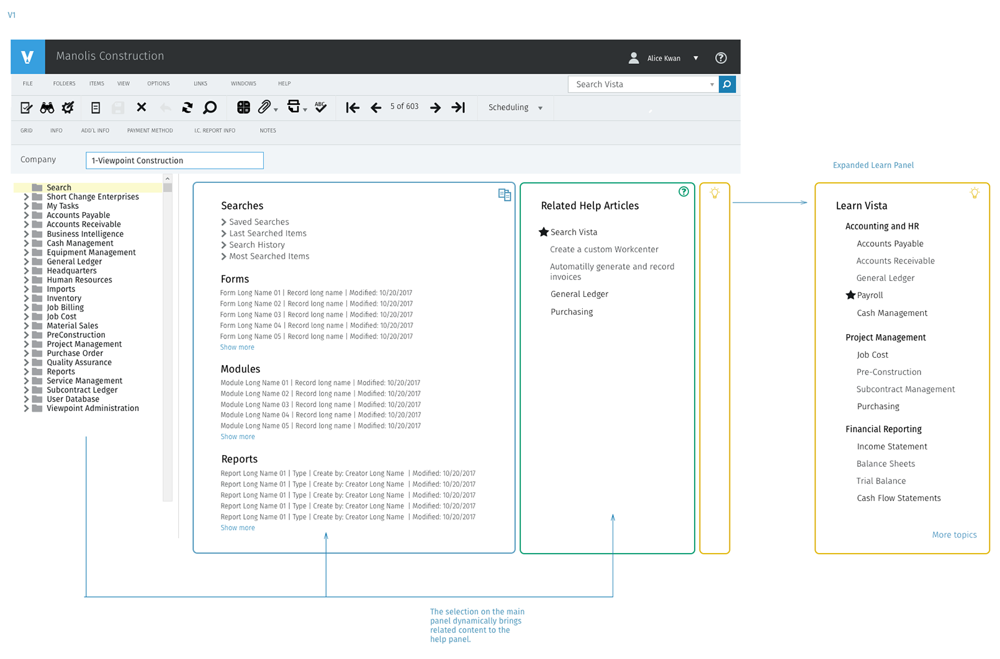
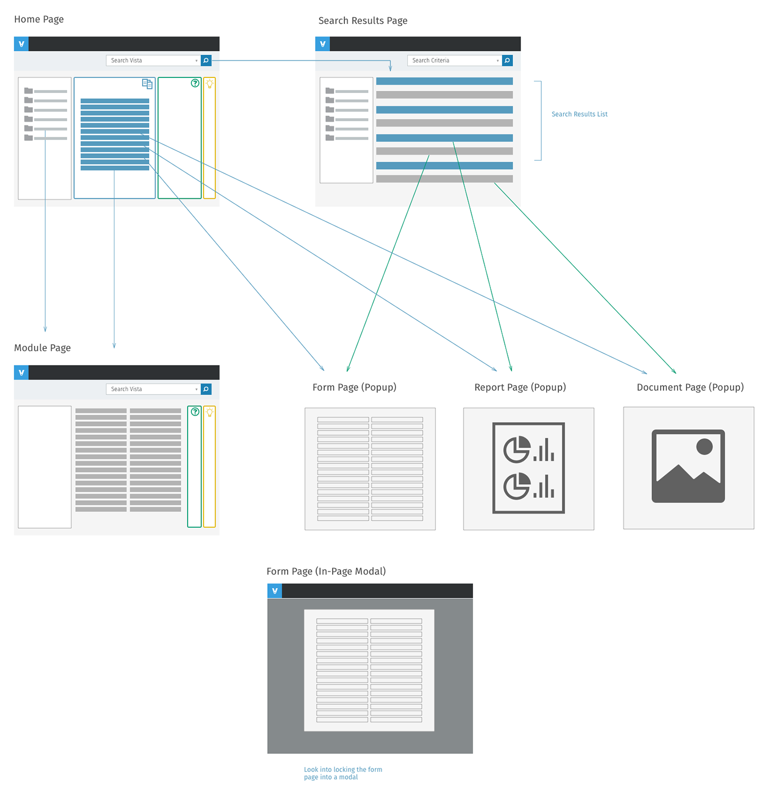
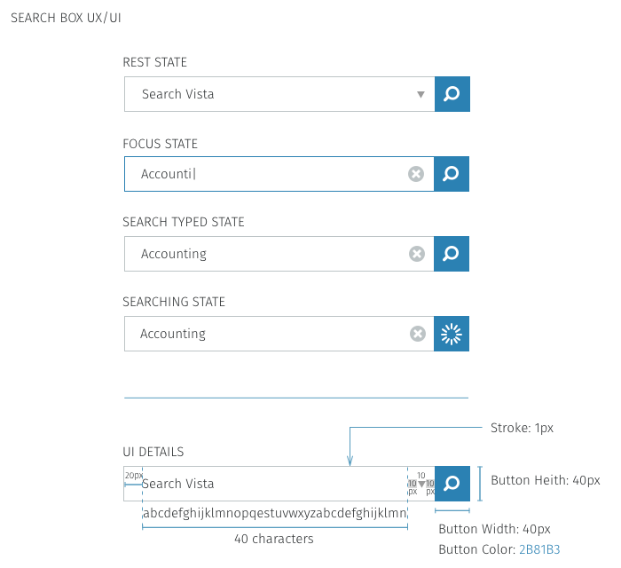
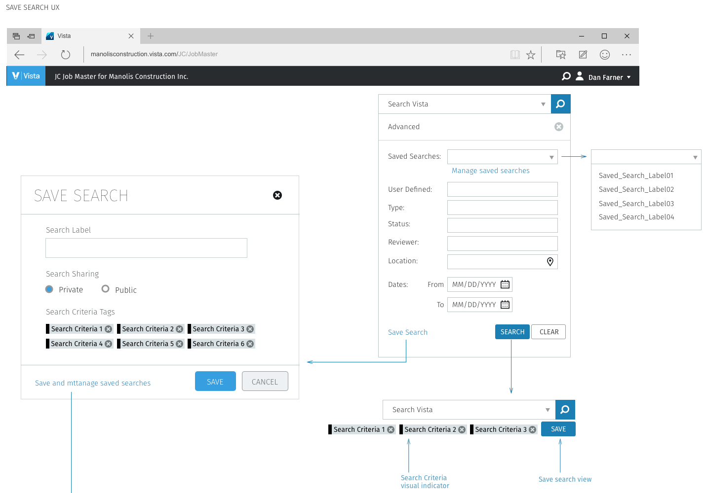
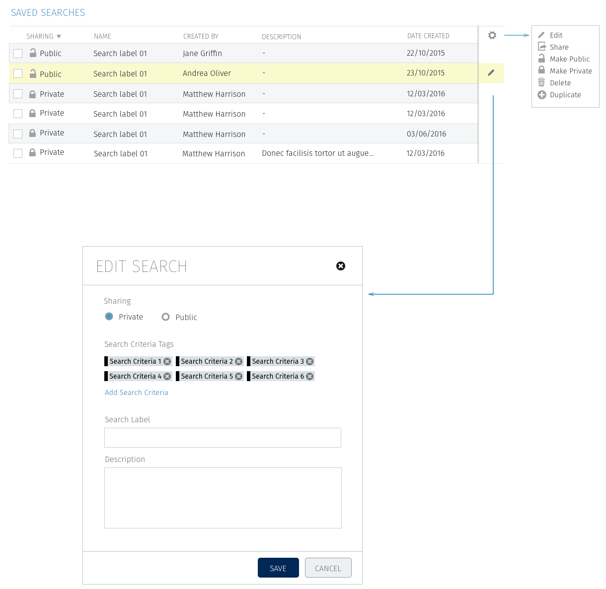
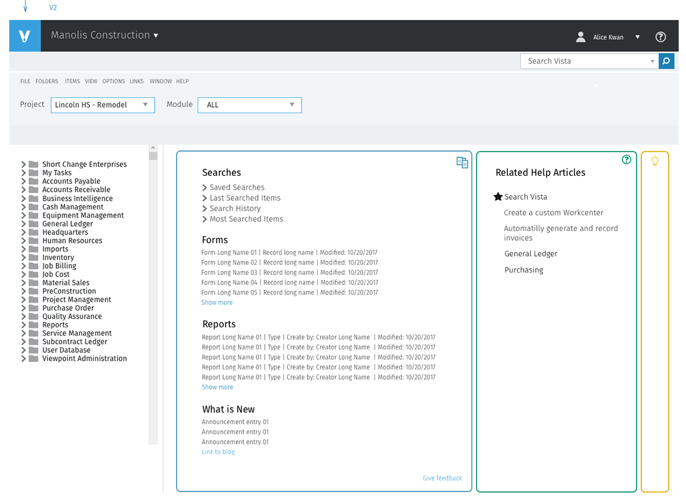
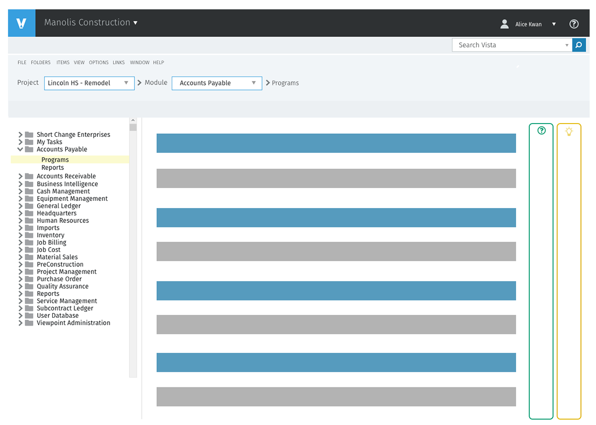
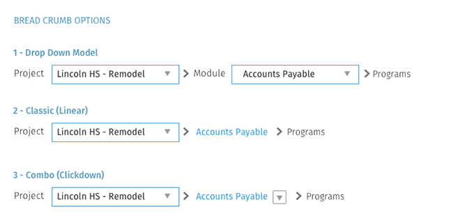

Viewpoint · 2016
Vista Search UX/UI
Vista is Viewpoint's construction ERP, now Trimble Vista. It runs a contractor's job costing, accounting, payroll and HR, service and equipment management, and reporting. People who use it know exactly which form, report or record they want, but reaching it meant walking a deep module tree. I designed search for Vista: one box that finds anything, advanced and saved searches for work people repeat, and a home page that brings the right help alongside the results.
Client
Viewpoint (now Trimble)
Timeline
2016
Role
Senior UX Designer
Team
Product manager, Vista engineers, accounting domain experts
Product area
Vista ERP · Search and navigation
Platform
Web · Vista browser client
Focus
Enterprise · Search · Design systems
Impact
One search box for every form, report and record in Vista, with searches people can save and share

In one line
I designed search for Vista, from the information architecture it sits on to the pixel spec of the search box. The work had four parts: a model of where every result opens, one search box with clear states, advanced and Boolean search that stay optional, and saved searches that a team can share.
Context and the problem
Vista is where a contractor's money lives. Trimble says 8,000 contractors use its financial products. The people inside Vista are accountants, payroll and HR staff, project managers and controllers, and in 2016 the product already had more than twenty modules. Their work is specific: open the AP invoice form for one project, run the cost report for one job, find the subcontract a reviewer approved last month.
Vista was organised the way the business is organised: company, then project, then module (Accounts Payable, Job Cost, Payroll and the rest), then the programs and reports inside it. That structure is correct, but it was also the only way in. To reach a form you had to know which module it lived in and walk the tree to it:
- Deep paths. Every task started with navigation. A report three levels down took three levels of clicking, every time.
- Knowledge you had to bring. New staff didn't know which module a form belonged to, and experienced staff kept notes to remember.
- Windows that piled up. Forms, reports and documents opened in their own windows, with no clear rule for which ones closed together.
The constraints:
- A large legacy product. Vista had years of modules, forms and reports behind it. Search had to fit over the existing structure, not replace it.
- Company and project context. Every result depends on which company and project you're in. Search could never lose that context.
- Mixed expertise. The same box had to serve a new clerk typing a word and a controller who wants exact criteria.
My role and what I owned
I was the UX designer on search, from the information architecture to the component spec handed to engineering.
- I owned the IA and page model, the user flows from search to each result type, the home and module page concepts, advanced, Boolean and saved search, the breadcrumb options and the search box component.
- Product management owned priorities and scope, including what shipped first and what waited.
- Engineering owned the search index and how results were ranked, and reviewed the window and dependency rules with me.
The figures are my original specification boards, cropped so each one makes a single point. Companies, projects, people and records in them are placeholder data.
Goals, and how we'd know
We agreed on what success looked like before designing screens:
- Fewer steps to a known item. Someone who knows the name of a form or report reaches it by typing, not by walking the tree.
- No lost context. Search results respect the current company and project, and the user always knows where a result will open.
- Repeat work gets faster. A search someone runs every week can be saved, rerun and shared with their team.
- Learning happens in place. Help that relates to what you're looking at shows up next to it.
What we learned in research
I mapped Vista's structure with product and domain experts and walked through how accounting and project staff actually find things: what they type, what they bookmark, and what they ask a colleague. Three findings changed the design.
1. People know the name, not the path
Users could name the thing they wanted (an AP invoice, a job cost report, a vendor) far more often than they could say which module it lived in. So search became the front door, on every page, with results that open the item directly (Decision 2).
2. The trouble is where things open
Forms, reports and documents each opened their own window, and nothing said how those windows related. Closing a module could leave forms orphaned, or close a report someone still needed. So I defined the page model before any screens: what's a page, what's a popup, and what closes with what (Decision 1).
3. The same searches come back every week
Month-end close, weekly AP runs and payroll all repeat. People rebuilt the same criteria each time. So saved searches became part of the core design, not a later feature (Decision 4).
Strategy and the decisions that mattered
Decision 1: Fix the page model first
Before designing the search page, I mapped Vista's hierarchy (company, project, module, then programs and reports) against the page type each level should use. Company, project and module are main pages with side navigation and a breadcrumb. Programs and reports open as their own windows. Then the dependency rules: forms are children of their module, so closing the module closes its forms. Reports and documents stand alone, so they stay open when you move on.
![Diagram with three columns. IA: Company, Manolis Construction, leads to Project, Lincoln HS Remodel, leads to Module, Accounts Payable, which splits into Programs and Reports; Reports split into Acct, Form and Drill Down, and Form into Inputs, Report Info and Notes. Nav structure and page type: company to module use side nav and breadcrumb on a main page; programs and reports are stand-alone modal windows or popups. Dependencies: a parent-child relationship where closing the parent closes the children, forms open in a modal window, and popups are independent of the main window](../assets/img/case/vista-search/ia-model.png)

Decision 2: One search box, with every state specified
Search sits in the title bar on every page, labelled Search Vista. I specified it as a component: a rest state with a dropdown for scope, a focus state that swaps the arrow for a clear button, a typed state and a searching state with a spinner in the button. The field shows 40 characters before scrolling, and the button is a 40px square, so it has the same weight on every page it appears on.

Decision 3: Advanced search stays one click away, not in the way
Most searches are a word or two. Some need exact criteria: type, status, reviewer, location, a date range. Advanced search opens under the same box, so there's no second search page to learn. Boolean search is a checkbox inside it, with a dropdown for All, And, Or, Not and Near, so the controller who wants operators has them and the clerk never sees them. Location fields suggest as you type, and you can add more than one.
![Two panels. Advanced search UX: the Search Vista box, then an Advanced panel with fields for user defined, type, status, reviewer, location and a from and to date range, with Save Search, Search and Clear; below, the search box with three search criteria chips and a Save button. Boolean search UX: definitions of AND as plus, NOT as minus, OR as the default, and NEAR as a phrase in quotes, then four variants of the advanced panel with a Boolean checkbox and an All dropdown listing All, And, Or, Not and Near, a second location added with a plus button, and a location type-ahead listing Portland International Airport, Portland and Ponytail Falls](../assets/img/case/vista-search/advanced-boolean.png)
Decision 4: Make searches something you keep
After a search runs, its criteria appear as chips under the box, with a Save button beside them. Saving asks for a label and whether it's private or public. Saved searches then appear in a dropdown at the top of advanced search, and a Saved Searches table lets people edit, share, make public or private, delete or duplicate them. A public search means an AP lead can set up the week's invoice search once and the whole team runs the same one.


Design process and solution
V1: search and help on one home page
The first home page concept (at the top of this page) put three panels next to the module tree: Searches with saved and recent searches and recently used forms, modules and reports; Related Help Articles; and a Learn Vista panel that expands into topics. Whatever you select in the main panel changes what the help panel shows, so help is about the thing you're looking at.
V2: less chrome, context in the header
V1 kept Vista's legacy toolbar, with its menus, icon row and record navigation, above the new panels. Reviewing it with the team, the case for keeping everything familiar ran into a simple problem: the toolbar was about records, and the home page has no record open. In V2 I removed it. Project and module became dropdowns in the header, so changing context is one choice instead of a trip through the tree. The home page gained a What is New section and a feedback link.

The module page and the breadcrumb
Pick a module and the same header becomes a breadcrumb: project, module, then programs. I compared three breadcrumb models. A dropdown at each level is powerful but heavy. A classic linear trail is light but only goes up. The combination we chose is a link for the module with a small dropdown next to it, so a click goes back up and the arrow jumps sideways to a sibling module.


Validation and iteration
I walked the flows through with Viewpoint's domain experts and customers, using the boards and clickable prototypes of the main scenarios: find a known form, find a report by criteria, rerun last week's search, and hand a search to a colleague. The biggest change came from the last two.
We thought advanced search was a form you fill in. It was a query you come back to.
We thought advanced search would be used once in a while, for a hard lookup: fill in the fields, get the result, done. We learned that the most valuable searches were the ones people ran every week, and the ones a lead set up for their team. Filling in the same six fields again was the real cost, and there was no way to see which criteria were applied once the panel closed. So we made criteria visible as chips after every search, added saving directly from the results, and added a shared table with public and private searches, so one person's setup becomes the team's.
Outcome and impact
The work was specified as a system engineering could build in stages: the page model and search box first, then advanced, Boolean and saved search. The source material has no numbers, so the outcome is described by what changed for people using Vista:
- Name it, open it. A form or report you can name is a search away from any page, without knowing its module.
- Predictable windows. Every result type has a defined place to open and a rule for what closes with it.
- Repeat work, saved. Weekly searches are saved once, rerun in a click, and shared across a team.
- A component, not a one-off. The search box has specified states and measurements, so it looks and behaves the same on every page.
In an ERP, people rarely don't know what they want. They know the name. Search should take them straight there, without making them prove they know where it lives.
What I'd do differently
- Measure the baseline first. Our goals were about steps and time to a known item, but we didn't record how long it took to reach a form through the tree. With that number, the outcome above could be a result instead of a description.
- Design results as early as the box. The boards spend more on the search box and advanced panel than on the results list. Ranking, grouping by type and empty states decide whether search feels smart, and I'd design them alongside the input.
- Settle the window model with engineering sooner. Popup versus in-page modal for forms stayed open longer than it should have. I'd prototype both early and decide with engineering in the room.
The broader lesson: in a big enterprise product, search isn't a feature on top of navigation. It changes what navigation has to do, so the page model and the search design have to be worked out together.